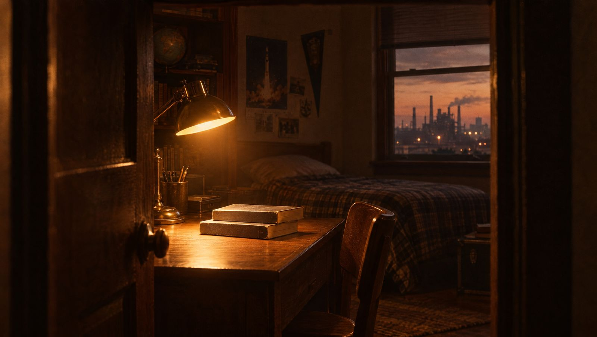
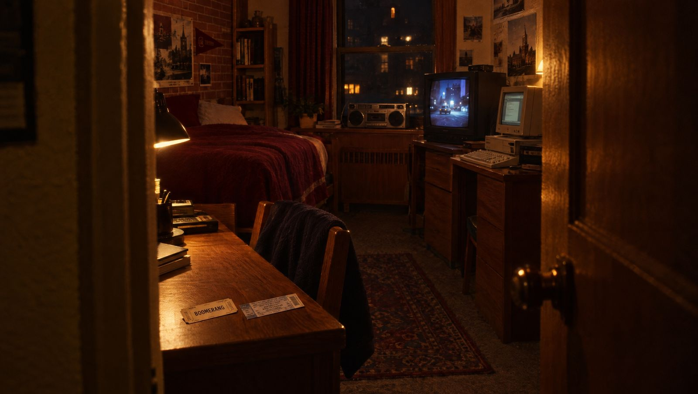
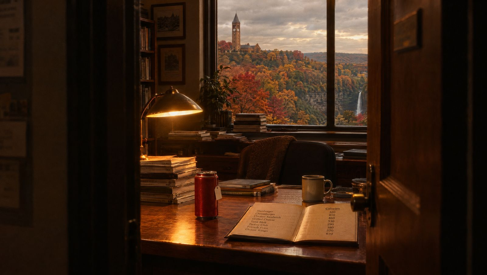
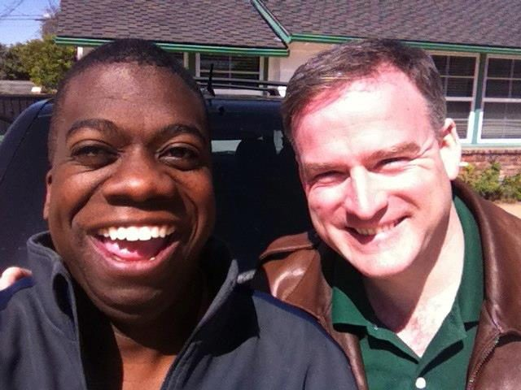
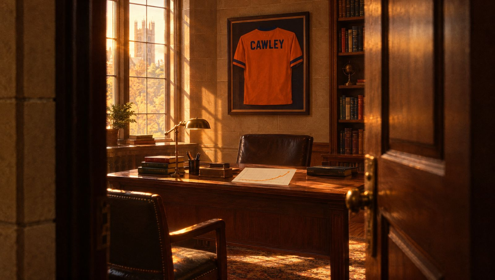
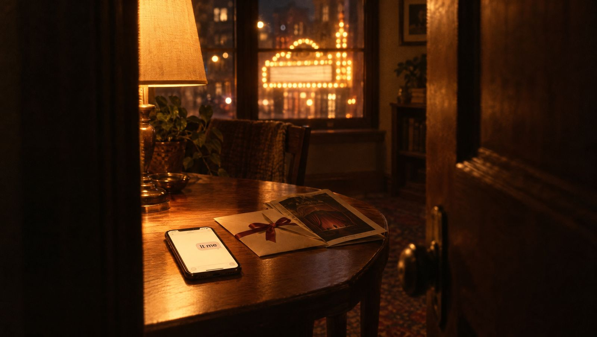

THE DOOR · 2 min 40 s · original score · turn the sound up
Eight doors
In 1992 John opened a door in DeWolfe. Behind each door below is a chapter of the life he built after that, and of the friendship that never closed.

Door 1
The Worldly Philosophers
Scranton, Pennsylvania · before 1989
John is a Scranton kid, and he found economics early, through two books he read in high school: The Worldly Philosophers and Free to Choose.
He took that curiosity to Harvard in 1989, spent a college summer interning on Capitol Hill, and graduated magna cum laude in economics in 1993.
“Reading The Worldly Philosophers and Free to Choose during high school made a big impression on me.”
John, ASHEcon interview

Door 2
You Let Me In the Door
Harvard, Quincy House (DeWolfe) · 1989 to 1993
Gordon and John both arrived at Harvard in 1989 and ended up roommates in DeWolfe. Neither of them owned a camera, so there are no photos from those years, only the stories.
ESPN on the TV, PC games, a radio contest win, a Go West concert, and Boomerang in a Boston theater in 1992. Gordon has called it the time John let him in the door ever since.
“Thanks for opening the door”
Gordon, 2018
Door 3
Price Theory
University of Chicago · 1993 to 1999
John did not go to Chicago to study health. Then he took Price Theory from Gary Becker, a Nobel laureate, and got hooked on Becker's Theory of Rational Addiction: the idea that even habits we struggle with respond to costs and rewards.
He noticed that obesity was large and rising, and made it his subject. Becker chaired his dissertation, and John finished his Ph.D. in 1999, already publishing alongside Nobel laureate James Heckman.
“...was enough to inspire me to start researching obesity.”
John, ASHEcon interview

Door 4
The Price Per Pound
Ithaca, Cornell · 2001 to 2025
For 24 years at Cornell, John put real numbers on questions people argue about. His most cited paper used relatives' weights to separate cause from coincidence, and found that the medical costs of obesity were far higher than earlier estimates.
He also tested policy. In Berkeley, prices rose by only 43.1% of a soda tax, so shoppers felt just part of it. In Philadelphia the whole tax reached prices, and adults drank soda 31% less often. He even ran a rare randomized experiment on restaurant calorie labels.
“John is not a hand-holder, he teaches his students to develop as independent scholars.”
His former students, 2019
Door 5
Go West Is On
Los Angeles, London, Geneseo · 2012 to 2020
The friendship kept its soundtrack across 3,000 miles. Go West came back at Gordon's engagement, and Gordon and Joe married on 5.3.14, the day after John's birthday.
They met for dinner in Los Angeles, ran into each other by chance in London in May 2017, and in February 2020 John drove two hours to Geneseo, New York, to hear Gordon speak.

“Wow. I love it when a plan comes together!”
John, London, 2017
Door 6
The First Star
The friend who knew to ask · 2017 to 2019
When Gordon won his dodgeball championship in 2017, he dedicated it to John, the friend who understood what that first star meant and knew to ask about it.
On Father's Day 2019, John told Gordon he had the instincts to help, nurture, and protect, the same instincts that led him to teach.
“One of the privileges of lifelong friends is to be truly known.”
Gordon, 2017

Door 7
The Cawley Era
Syracuse, Maxwell School · 2025 to 2026
On August 18, 2025, John became the Daniel Patrick Moynihan Chair in Public Policy at Syracuse, with an office in Eggers Hall. He edited the Journal of Health Economics from 2015 to 2020, and he is president-elect of the American Society of Health Economists, serving as president in 2026 to 27.
About 30 Ph.D.s had him on their dissertation committees, and many became his co-authors.
“He could speak to anybody, and I think that's sort of the gold standard.”
John, on Moynihan, taking the chair

Door 8
It Me
The Academy and Cawley Fest · October 2026
On October 19, 2026, the National Academy of Medicine elected John “For pioneering the field of the economics of obesity.” He shared the news with Gordon in two words, Gordon's own catchphrase.
Three days later he comes to Los Angeles for Cawley Fest at Gordon and Joe's home: no catching up, just living while he is here.
“It me”
John, October 19, 2026